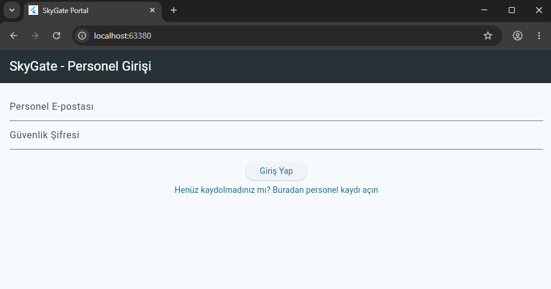
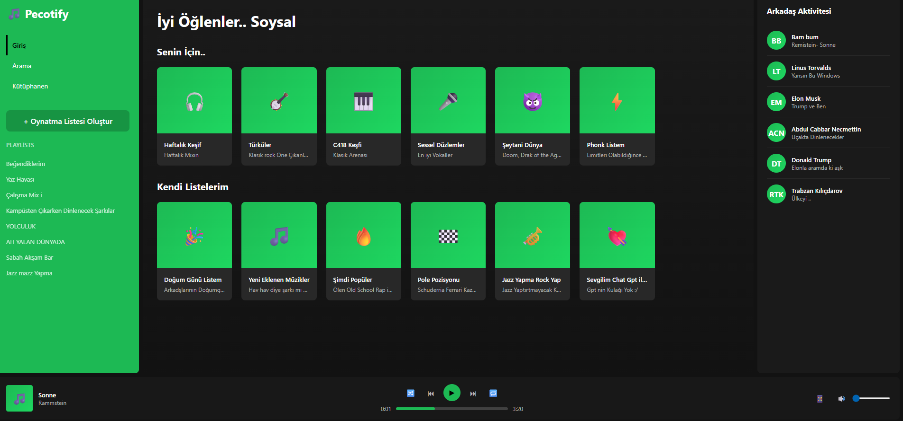
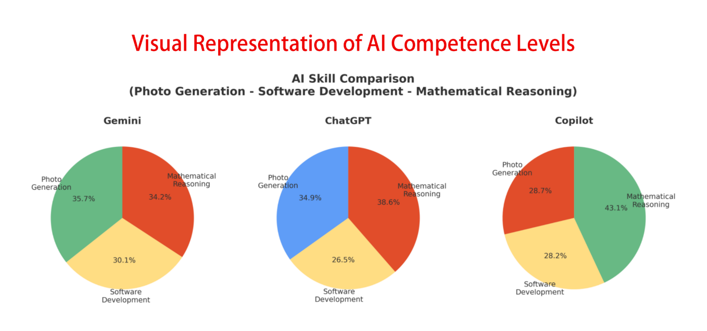
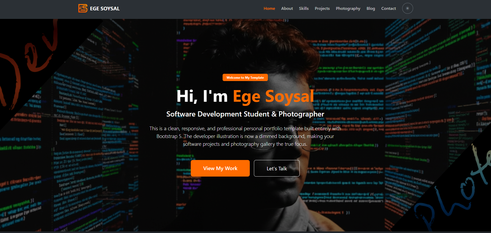

Projects
Software projects I developed, independent research, and technical studies.

skygate-login-register-flutter-dart-learn-project
Clean Architecture Proof-of-Concept (PoC) featuring simulated aviation domain business logic and a lightweight Mock Authentication mechanism for role validation.
SkyGate - Crew Access Portal 🛫
A Clean Architecture Proof-of-Concept (PoC) featuring simulated aviation domain business logic and a lightweight Mock Authentication mechanism for role validation. Built with Flutter and Dart, following enterprise-level loose coupling principles.
This project serves as a showcase of architectural discipline, transforming abstract authentication flows into a concrete, domain-driven enterprise solution without relying on external cloud dependencies.
🏗️ Architectural Blueprint & Key Features
Driven by the instruction style of Vandad Nahavandipoor, the project isolates the user interface from the authentication source using strict abstraction layers.
1. Loose Coupling via Authentication Abstraction
-
AuthProvider (Interface): An abstract
contract establishing the core authentication protocol
(
logIn,createUser,logOut,sendEmailVerification). The UI layer interacts only with this contract, completely unaware of the underlying database technology. -
MockAuthProvider: A memory-driven (RAM)
simulation engine that mimics real-world backend behavior,
including network delays (
Future.delayed) and domain-specific exception throwing. - AuthService (Wrapper): A factory-driven layer acting as the singular gateway for the application, ensuring that swapping the Mock engine with real Firebase production code requires changing exactly one line of code.
2. Robust Flow Guarding & Advanced UX (Chapter 22 & 23 Patterns)
-
Auth Flow Guard: A logic barrier embedded
inside the
FutureBuilderorchestration level. Technicians can register, but they are strictly blocked from accessing sensitive flight logs until their corporate email status is verified. -
Anti-Stuck UX Pattern: Resolves the classic
screen-lock antipattern by introducing a synchronized
Restartmechanism that safely clears the in-memory user states and recovers the initial authentication route.
3. Production-Ready Code Standards
-
Centralized Routing Engine: Zero hardcoded
string routes. Entire navigation tree is cataloged within
lib/constants/routes.dart. -
Reusable UI Components: Modular error
handling dialogs completely abstracted out of the view layer
into
lib/utilities/. -
Zero Print Policy: Eradicated standard
print()statements in favor of structureddart:developerlogging for professional DevTools inspection.
🛠️ Tech Stack & Testing Environment
- Framework: Flutter (Material 3)
- Language: Dart (Strict Null Safety & OOP)
- Hardware Testbed: Samsung Galaxy Tab S6 Lite (SM-P620)
- **Mirror
- Anam babam usülü

Music-Player-ui-html-css
A static Spotify Web Player user interface built using HTML and CSS, focusing on layout, styling, and UI structure.
Spotify UI HTML & CSS
A static user interface project inspired by the Spotify Web Player, built using pure HTML and CSS.
This project focuses on layout structure, styling, and modern UI design principles. It is UI-only and does not include any backend logic, JavaScript functionality, or real music playback.
📌 Project Overview
The goal of this project is to practice and recreate the visual layout of a music streaming web player similar to Spotify:
- HTML semantic structure: Well-structured code utilizing proper layout tags.
- CSS layout techniques: Implementation using Flexbox and CSS Grid.
- Responsive UI design: Adaptive layout adjustments across various viewports.
- Component-based styling: Clean, reusable, and readable styling organization.
🛠️ Technologies Used
- HTML5: Semantic structure layout.
- CSS3: Advanced styling featuring Flexbox, Grid, custom scrollbars, hover effects, and responsive design.
- No Frameworks: Built with zero JavaScript, external libraries, or modern frameworks.
💻 Tech Stack & Repository Stats
- HTML: 58.6%
- CSS: 41.4%
- Contributors: Ege Soysal

ai-experiments-and-research
Independent AI research focused on practical and lightweight experiments, human AI interaction, simple model behaviors, and exploratory studies in machine learning. A collection of small-scale analyses, prototypes, and observations aimed at understanding how AI systems interact with users and real-world scenarios.
ai-experiments-and-research 🧠
Independent AI research focused on practical and lightweight experiments, human-AI interaction, simple model behaviors, and exploratory studies in machine learning.
A collection of small-scale analyses, prototypes, and observations aimed at understanding how AI systems interact with users and real-world scenarios.
🔍 Research Focus Areas & Goals
This repository serves as a personal research space to observe and document meaningful patterns in AI behavior without building large production systems.
1. Core Objectives
- Human & AI Interaction: Understanding communication patterns and behavior shaping between users and AI systems.
- Interpretable Behaviors: Evaluating minimal examples, edge cases, and behavior-driven tests for model alignment.
- Lightweight Experiments: Developing quick, real-world oriented tests and small prototype interactions.
2. Research.1: Comparative Analysis of AI Models
A comparative evaluation of ChatGPT, Gemini, and Copilot tested across three multimodal skill areas:
- Photo Generation: Gemini performed the fastest with balanced quality; ChatGPT showed high interpretative accuracy but lower fidelity; Copilot responded significantly slower.
- Software Development: Models were tasked to build a C# To-Do List app. Gemini added interactive checkboxes, ChatGPT produced the most logical structure, and Copilot generated a basic layout.
- Mathematical Reasoning: All models solved the tax problem correctly, with Copilot leading in total computational speed.
3. Research.2: Evolution of Software Industry Roles
An examination of how AI reshapes software and IT jobs within a 15-year prediction window (2025–2040):
- Declining Roles: Routine positions such as Junior Developer, Manual QA, and L1 Support face automation risks due to AI-generated code and autonomous testing.
- Transforming Roles: Traditional operational positions adapt toward infrastructure automation (e.g., SysAdmin to CloudOps, DBA to Data Architecture).
- Emerging Roles: New specialized positions appear including AI Agent Orchestrator, LLMOps Engineer, and Generative AI Security Expert.
📜 Project Standards & License
- Project Intent: Observational studies and idea-driven prototypes
- License: MIT License

CSharp-3Level-Puzzle-Sudoku
Multi level console Sudoku and Latin Square project written in C#. It includes a 3x3 beginner level, a scalable 6x6 intermediate structure, and a planned 9x9 full Sudoku system. The game uses separate solution and play matrices, enforces row and column rules, supports random generation, and is designed for future expansion.
CSharp-3Level-Puzzle-Sudoku 🧩
Multi-level console Sudoku and Latin Square project written in C#, designed for algorithmic training and continuous expansion.
The game implements strict matrix synchronization, enforcing distinct play and solution states while managing core puzzle validation rules directly via the command-line interface.
🏗️ Roadmap & Architecture
The codebase splits mathematical grid generation from state enforcement, structuring logical validation over progressive difficulty tiers:
1. Core Mechanics
- Dual-Matrix Flow: Utilizes separate execution pipelines for the solution engine and the dynamic game loop layers.
- Constraint Enforcement: Actively checks horizontal and vertical array elements to block illegal placements in real-time.
- Procedural Generation: Supports pseudo-random map seeds to construct clean, unique layouts upon initialization.
2. Difficulty Progressions
- Basic Level (3x3): Compact starter configuration focused on Latin Square fundamentals and swift validation loops.
- Mid Level (6x6): Intermediate configuration establishing scalable sub-grid architectures for dynamic scaling.
- Full System (9x9): A planned flagship structure built to handle classical puzzle computations and deep row-column trees.
🛠️ Tech Stack & Versioning
- Language / Environment: C# (.NET Console Application)
- Latest Version: V.1 (Active Development Lifecycle)

bootstrap-portfolio-template
A clean, responsive personal portfolio template built with Bootstrap 5. Free to use and customize.
Bootstrap Responsive Portfolio Template 🚀
A modern, clean, and fully responsive personal portfolio website template built with Bootstrap 5. Designed for software developers, digital creators, and photographers who need a structured and scalable web presence.
The project focuses on modular page architecture, responsive UI consistency, and lightweight performance, combining Bootstrap grid system with custom JavaScript for theme control and interactive components.
🏗️ Architecture Overview
Built on a multi-page structure where each section is isolated for scalability, maintainability, and clean UI separation.
Core System Design
- Modular Page System: Separate HTML pages for Home, About, Skills, Projects, Photography, Blog, and Contact.
- Theme Engine: JavaScript-based Dark/Light mode system using CSS variables for instant UI switching.
- Component-Based UI: Bootstrap 5 grid system with reusable card layouts and responsive sections.
Key Features
- Fully Responsive Design: Optimized for mobile, tablet, and desktop devices using Bootstrap 5.
- Photography Gallery: Minimal grid system designed for visual portfolio presentation.
- Certificate System: JavaScript-powered modal/lightbox structure for credential display.
- Performance Focused: Built with vanilla CSS/JS and Bootstrap bundles for fast load times.
🛠️ Tech Stack
- Frontend: HTML5, CSS3, Bootstrap 5
- JavaScript: Vanilla JS (Theme & UI interactions)
- Architecture: Multi-page static site structure
- Focus: Responsive design, modular UI, performance optimization